Unit 6A
Statistics - Bar Charts, Pie Charts, Frequency Polygons, Histograms, Mean, Median and Mode
1. The mean of five numbers is 39. Two of the numbers are 103 and 35 and each of the other three is equal to . Find the numerical value of
(a) the total of the five numbers,
(b) .
2. A teacher asked 24 children to name their favourite fruit. The replies are illustrated by the bar chart on the right. Use the circle in the answer space to illustrate the information on a clearly labelled pie chart. (sectors with angles of 30° are drawn in as a guide.)
3. A survey was taken of the number of cars passing a road junction during 35 equal intervals of time. The results were recorded in the following table. For example, 4 cars passed the junction during each of 6 intervals.
| Number of cars | 0 | 1 | 2 | 3 | 4 | 5 | 6 |
| Frequency | 8 | 7 | 4 | 4 | 6 | 3 | 3 |
Find, for this distribution,
(a) the mode,
(b) the median,
(c) the mean.
4. The bar chart illustrates the results of a survey carried out in junior schools in a certain area. Calculate
(a) the total number of teachers,
(b) the percentage of schools which have five or more teachers.
5. Children in a class were asked to say which of the three colours red, white or blue they preferred. The results are represented on the given pie chart.
(a) Calculate the angle in the white sector.
(b) Given that 5 children expressed a preference for red, calculate the number of children in the class.
(c) Calculate the percentage of children in the class who preferred blue.
6. In a traffic survey the number of cars, buses and lorries which passes a certain point were noted and the results are represented in the given pie chart.
(a) Calculate the value of .
(b) Given that there were 735 cars, calculate the total number of vehicles in the survey.
7. The marks scored by eleven children in a spelling test are as follows: 9, 1, 4, 8, 7, 8, 4, 2, 10, 9, 4. Find, for this set of marks,
(a) the mode,
(b) the median,
(c) the mean.
8. For the distribution 5, 8, 12, 10, 5, 3, 7, 5, 20, 10, find
(a) the mode,
(b) the mean,
(c) the median.
9. A class of 30 children entered a competition in which the highest possible score was 6. Their scores are given in the table.
| Score | 0 | 1 | 2 | 3 | 4 | >4 |
| No. of children | 1 | 2 | 4 | 6 | 9 | 8 |
Draw clearly, a histogram to represent this data.
10. The bar chart illustrates the results of a survey to find the number of passengers in a random sample of 80 cars. Calculate
(a) the angle, in a pie chart, of the sector which represents cars with one passenger,
(b) the total number of passengers,
(c) the percentage of cars which had at least two passengers.
11. (a) The distribution of 100 values of a variable is shown in the table.
| 0 | 1 | 2 | 3 | 4 | 5 | 6 | |
| Frequency | 20 | 30 | 25 | 16 | 5 | 2 | 2 |
For this distribution, find
(i) the mode,
(ii) the median,
(iii) the mean.
(b) A newsagent recorded the number of requests for a certain weekly magazine over a period of 100 successive weeks. The results are shown in the table below.
| No. of requests per week | 17 | 18 | 19 | 20 | 21 | 22 | 23 |
| Frequency | 20 | 30 | 25 | 16 | 5 | 2 | 2 |
(i) Using your result from (iii) above, state the mean number of requests per week. The newsagent bought these magazines for 10¢ each and sold them for 20¢ each. He thus made a profit of 10¢ on each magazine he sold, and he lost 10¢ on each magazine which remained unsold. He decided to buy 19 copies of this magazine each week. Calculate the profit he made on these magazines,
(ii) for the 20 weeks when he had 17 requests per week,
(iii) for the whole period of 100 weeks.
12. A baker sells large loaves, small loaves, bread rolls and cakes. The pie chart represents the number of each of these items sold on a particular day.
(a) Express the number of cakes sold as a fraction of the total number of items sold.
(b) Given that he sold 80 cakes, calculate the number of small loaves he sold.
(c) Given that the number of large loaves sold is twice as many as the number of bread rolls sold, calculate the angle of the sector which represents the number of large loaves sold.
13. A surveyor makes 5 separate measurements of the same angle and his results are , , , , . Calculate the mean of the readings.
14. The following is a set of eleven numbers: 1, 4, 5, 12, 4, 20, 14, 4, 18, 10, 7.
(a) State the mode.
(b) Find the value of the median.
(c) Calculate the mean of the eleven numbers.
(d) When the number is added to the above set, the new mean is 10. Calculate the value of .
15. 300 members of a football supporters club were asked how many matches they had seen during the previous year. The answers are shown in the following table. For example, 17 members had seen 37 matches.
| No. of matches seen () | 37 | 38 | 39 | 40 | 41 | 42 | 43 | 44 |
| No. of members () | 17 | 34 | 47 | 54 | 55 | 61 | 19 | 13 |
(a) Draw the frequency polygon for this distribution, using the following scales. On the horizontal axis take values of from 37 to 44 and a scale of 2 cm to represent 1 match. On the vertical axis take values of from 0 to 70 and a scale of 2 cm to represent 10 members.
(b) For this distribution, find
(i) the mode,
(ii) the median.
(c) Copy and complete the following table which uses an assumed mean of 40.
| No. of matches seen () | No. of members () | ||
| 37 | 17 | −3 | −51 |
| 38 | 35 | ||
| 39 | 47 | ||
| 40 | 54 | ||
| 41 | 55 | ||
| 42 | 61 | ||
| 43 | 19 | ||
| 44 | 13 | ||
| Total = 300 | Total = | ||
(d) Hence, or otherwise, calculate the mean of the distribution.
16. (a) Find the median of the distribution: 5·1, 7·9, 3·6, 2·1, 7·9, 4·2, 3·6, 7·8, 3·6.
(b) The mean of a set of eight numbers is 17·5. Given that six of the numbers are 12, 14, 15, 19, 24 and 25, find the mean of the other two numbers.
17. Each child in a group of 120 was asked to choose a camera or a book or a calculator as a present. Their choices are represented on the given pie chart. Calculate
(a) the value of ,
(b) the fraction of the group that chose a calculator,
(c) the number of children who chose a camera.
18. The children in a class are each asked how many pets they have. The bar chart illustrates the results of this survey. Find
(a) the number of children in the class,
(b) the mean number of pets per child.
19. A survey was carried out to find the number of children in each of 400 families. The results are shown in the table below.
| Number of children in family | 0 | 1 | 2 | 3 | 4 |
| Number of families | 46 | 92 | 98 | 104 | 60 |
(a) Calculate the mean number of children per family.
(b) A similar survey was carried out on 200 different families and, in this case, the mean number of children per family was . Given that the mean number of children per family for all 600 families was 2·2, calculate the value of .
20. The number of goals scored by a netball team in seven matches was 12, 23, 18, 14, 24, 25 and 12.
(a) Write down the modal score.
(b) Find the number of goals the team needs to score in its next match in order that its mean score in the eight matches is exactly 17.
21. Each boy in a group of 200 was asked to choose which one of three given subjects he preferred. The answers showed that 95 chose Mathematics, 40 chose English and 65 chose Geography.
(a) Express the number of boys who chose Mathematics as a percentage of the total number in the group.
(b) The choices were represented on a pie chart. Find the size of the angle of the sector which represented the number who chose Geography.
22. (a) A footballer scored the following number of goals in eleven matches: 1, 0, 0, 2, 2, 0, 1, 2, 3, 1, 2. Write down the modal score.
(b) The table below shows the number of girls who ran certain distances.
| Distance (km) | 5 | 10 | 15 | 20 | 25 |
| Number of girls | 2 | 1 | 5 | 1 |
Given that the median is 20 km, find the value of .
(c) The mean of the masses of five parcels is 400 g. When another parcel is added, the mean of the masses increases by 7 g. Find the mass of the sixth parcel.
23. Each boy in a group of 200 was asked to choose which one of three given subjects he preferred. The answers showed that 85 chose Mathematics, 60 chose English and 55 chose Geography.
(a) Express the number of boys who chose Mathematics as a percentage of the total number in the group.
(b) The choices were represented on a pie chart. Find the size of the angle of the sector which represented the number who chose Geography.
24. (a) A footballer scored the following number of goals in nine matches: 1, 0, 0, 2, 2, 0, 1, 4, 3. Write down the modal score.
(b) The table below shows the number of girls who ran certain distances.
| Distance (km) | 5 | 10 | 15 | 20 | 25 |
| Number of girls | 1 | 3 | 7 | 2 |
Given that the median is 10 km, find the value of .
(c) The mean of the masses of six parcels is 500 g. When another parcel is added, the mean of the masses increases by 9 g. Find the mass of the seventh parcel.
25. Each of the boys in a small school was asked to name his favourite sport. Their choices are represented on the given pie chart.
(a) Calculate the value of .
(b) Given that 28 chose rugby, calculate the total number of boys in the school.
26. A six sided die is thrown 29 times. The results are shown in the table below.
| No. shown on die | 1 | 2 | 3 | 4 | 5 | 6 |
| Frequency | 8 | 7 | 5 | 2 | 3 | 4 |
(a) For these results, write down
(i) the mode
(ii) the median
(b) The die is thrown one more time. Find the number shown on the die if the mean of the 80 throws is to be exactly 3.
27. The girls in a school were asked to choose their favourite form of entertainment from television, cinema and radio. Their replies are represented in the pie chart.
(a) Calculate the value of .
(b) 400 of the girls chose the cinema. Find the total number of girls in the school.
(c) Find the percentage of girls who chose the radio.
28. The pie chart represents the distribution of population in a village.
(a) Calculate the percentage of the population who are girls.
(b) Given that there are twice as many women as men, calculate .
(c) Given also that the number of boys is 432, calculate the total population of the village.
29. A group of 25 children were asked how many books they had read in the last month. The results of the survey are shown in the bar chart. Find
(a) the modal number of books,
(b) the total number of books,
(c) the proportion of children who read more than 3 books, giving your answer as a fraction.
30. Each member of a class of 40 girls was asked to name her favourite colour. Their choices are represented on the given pie chart.
(a) If 15 said they liked blue, calculate the value of .
(b) Find the number who said they liked green.
(c) Find the percentage of the class who said they liked red.
31. Every member of a group of women was asked how many children she had. The bar chart illustrates the results of this survey. Find
(a) the number of women in the group,
(b) the modal number of children,
(c) the median number of children.
32. Each member of a class of 30 girls was asked to name her favourite subject. Their choices are represented in the given pie chart.
(a) If 4 said they liked English, calculate the value of .
(b) Find the number who said they liked Science.
(c) Find the percentage of the class who said they liked Mathematics.
33. Every member of a group of boys was asked how many sweets he had eaten that day. The bar chart illustrates the results of this survey. Find
(a) the number of boys in the group,
(b) the modal number of sweets,
(c) the median number of sweets.
34. Each of the girls on a journey was asked to choose an orange drink or lemon drink or a cola. Their choices are represented in the given pie chart.
(a) Find the percentage of girls who chose cola.
(b) Given that 120 chose orange, calculate the total number of girls on the journey.
35. A man proposes to plant 500 trees. Of these, 200 are to be Mango trees, 175 are to be Palm trees and the rest are to be Rubber trees. The Pie Chart illustrates the distribution.
(a) Calculate .
(b) Following a change in government grants, the man decides to increase the number of Rubber trees by 80%, keeping the numbers of Mango and Palm trees the same as before.
(i) Calculate the new number of Rubber trees.
(ii) What fraction of the new total number of trees will be Mango trees? Give your answer in its lowest terms.
36. (a) A gardener planted some cucumber seeds in each of 11 pots. The number of seeds that germinated in each pot were 2, 7, 2, 1, 1, 5, 3, 1, 7, 1, 3. Find
(i) the mode,
(ii) the median of this distribution.
(b) The heights of 20 children are shown in the table below. Calculate an estimate of the mean height of the children.
| Height (x cm) | |||
| Number of children | 7 | 8 | 5 |
37. A number of people were interviewed in an opinion poll. They were asked to say which method of transport they preferred — bus, car or train. The results of the poll are represented on the pie chart.
(a) Calculate the fraction of those interviewed who preferred to travel by bus, giving your answer in its lowest terms.
(b) Express the number of those who preferred train travel, as a percentage of those who were interviewed.
(c) Given that 80 people preferred to travel by train, calculate the number who preferred to travel by car.
38. Ann, Mary and Ruth have 3 000 stamps between them. Ruth has 800 stamps. The pie chart represents the number of stamps each girl has.
(a) (i) How many stamps does Ann have?
(ii) Calculate the value of .
(b) Ruth has 500 more used stamps than unused stamps. How many used stamps does she have?
39. A group of 30 children were asked how many pets they had. The results are shown in the table.
| Number of pets | 0 | 1 | 2 | 3 |
| Number of children | 7 | 5 | 8 | 10 |
For this distribution, find
(a) the mode,
(b) the mean.
40. 6000 people voted in an election. The names of the candidates were Adams, Ball and Cox.
Ball received 1800 votes. The pie chart represents the number of votes each candidate received.
(a) How many votes did Adams receive?
(b) Calculate the value of .
(c) Of the people who voted for Ball, there were 300 more women than men. How many were women?
41. A six-faced die was thrown 28 times. The table shows the number of times that each possible score occurred.
| Score | 1 | 2 | 3 | 4 | 5 | 6 |
| Frequency | 8 | 6 | 6 | 2 | 4 | 2 |
(a) Write down the modal score.
(b) After the 27th throw the median score was 2. What was the least possible score on the 28th throw?
(c) The die was then thrown twice more. The mean score of all 30 throws was exactly 3. What were the scores on the extra two throws?
42. The number of goals scored by a football team in each of 30 matches was as follows:
2 1 3 3 0 0 4 0 1 3
3 3 2 5 1 0 1 2 0 4
0 4 1 6 2 4 1 0 5 5
(a) Complete the table in the answer space.
| Number of goals scored | 0 | 1 | 2 | 3 | 4 | 5 | 6 |
| Number of matches | 4 | 4 | 3 |
(b) For this distribution, find
(i) the mode,
(ii) the mean.
43. Visitors to a National Park were asked to vote for their favourite animal. The results are shown on the given pie chart.
(a) Calculate
(i) the value of ,
(ii) the percentage of visitors who voted for giraffes.
(b) Calculate the number of people who took part in the survey, given that elephants obtained 20 more votes than lions.
44. The number of goals scored by a hockey team in each of 30 matches was as follows:
1 4 1 3 0 7 2 4 0 1
0 3 7 2 5 1 1 4 3 4
4 5 0 1 5 2 3 3 0 2
(a) Complete the table in the answer space.
| Number of goals scored | 0 | 1 | 2 | 3 | 4 | 5 | 6 | 7 |
| Number of matches | 5 | 5 | 0 |
(b) For this distribution, find
(i) the mode,
(ii) the mean.
45. All the children in a school were asked to choose their favourite fruit. The results are shown on the Pie Chart.
(a) Calculate
(i) the value of ,
(ii) the percentage of children who chose Mango.
(b) The number of children who chose Guava was 56 more than the number who chose Mango. Calculate the number of children in the school.
46. The numbers of hours per week worked by 40 workers at a factory are shown in the table below.
| Number of hours per week (x) | ||||
| Number of workers | 11 | 14 | 9 | 6 |
(a) Write down the modal class of this distribution.
(b) Complete the pie chart in the answer space to illustrate the information in the given table.
(c) Calculate an estimate of the mean number of hours worked per week.
47. The bar chart shows the number of goals scored in each game in a hockey competition. Find
(a) the mode of the distribution,
(b) the total number of games played,
(c) the mean number of goals scored per game.
48. In a survey, 120 children were asked how far they could swim. The children were divided into three groups.
A: those who can swim less than 100 m,
B: those who can swim at least 100 m, but less than 200 m,
C: those who can swim at least 200 m, but less than 400 m.
Each of the 120 children is in one of the three groups, as shown on the given pie chart.
(a) Complete the table in the answer space.
| Group A | Group B | Group C | |
| Distance (d metres) | |||
| Number of Children | 50 |
(b) The information is also to be represented in a histogram. Complete the histogram.
49. On a farm the numbers of workers picking fruit on eleven days last March were 3, 8, 9, 12, 12, 15, 12, 13, 10, 8, 4. Find
(a) the median,
(b) the mode of this distribution.
50. Sarah spent $1800 on a holiday. The pie chart shows how the cost was split up.
(a) How much did she spend altogether on her hotel and meals?
(b) 'Other' expenses were half of the cost of her fare. Calculate
(i) ,
(ii) her fare.
Answer the whole of this question on a sheet of graph paper.
51. The table shows the distribution of the masses of a number of eggs.
| Mass (m) in grams | Frequency |
| 20 | |
| 15 | |
| 5 |
(a) Calculate an estimate of the mean mass of the eggs.
(b) Draw a histogram to represent this distribution. Label your axes carefully.
(c) An egg is chosen at random and is then replaced. Find the probability that its mass lies in the range .
(d) Two eggs are chosen at random. Find the probability that the mass of one is in the range and the mass of the other is in range .
52. (a) By making tally marks, or otherwise, obtain the frequency distribution of the number of letters in each word in the text below.
Even when you know how to solve a problem,
one careless mistake will lead to a wrong answer..
| Number of letters | 1 | 2 | 3 | 4 | 5 | 6 | 7 | 8 |
| Frequency |
(b) What is the mode of the distribution obtained in part (a)?
53. (a) A statement in a book on astronomy says
'When the moon passes across the face of the sun, as it does do
occasionally, there is an eclipse.'
By making tally marks, or otherwise, obtain the frequency distribution of the number of letters in each word of the statement.
| Number of letters in the word | 1 | 2 | 3 | 4 | 5 | 6 | 7 | 8 | 9 | 10 | 11 | 12 |
| Frequency |
(b) Write down the mode of the distribution obtained in part (a).
54. During a period of 60 days a weather station recorded the number of hours of sunshine each day. The results are given in the table below.
| Time (x hours) | ||||||
| Frequency | 10 | 15 | 12 | 10 | 8 | 5 |
(c) Calculate an estimate for the mean number of hours of sunshine each day.
55. Tickets for a show cost $1, $2, $5 or $20. The number of tickets sold at each price is shown in the table.
| Price | $1 | $2 | $5 | $20 |
| Number of Tickets Sold | 84 | 68 | 22 | 6 |
(a) Write down the modal price.
(b) Find the median price.
(c) Calculate the mean price.
(d) Draw a pie chart to show the number of tickets sold at each price.
56. Miss Jones asked the children in her class, 'What is your favourite colour?'
Her results are shown on the bar chart.
(a) (i) How many children are in her class?
(ii) What is the mode of the distribution?
(b) The information is also to be represented in a pie chart. Calculate the angle of the sector representing Yellow.
57. The cumulative frequency curve shows the age distribution of the population of the United States of America in 1950. Use the curve to estimate
(a) the median age of the distribution,
(b) the upper quartile of the distribution,
(c) the probability that an American chosen at random would be more than 60 years old.
58. The histogram shows the distribution of lengths, metres, of a group of objects. It is known that 6 of the objects have lengths of 10 metres or less.
(a) Find the number of objects whose lengths lie in the range .
(b) Find the total number of objects in the group.
(c) One object is chosen at random from the group and not replaced. Another object is then chosen. Calculate the probability that both objects have lengths of 10 metres or less.
59. The bar chart shows the number of goals scored by a team in 19 matches. Find
(a) the mode of the distribution,
(b) the median of the distribution,
(c) the total number of goals scored.
60. A box containing 250 apples was opened and each apple was weighed. The distribution of the masses of the apples is given in the following table.
| Mass ( grams) | |||||
| Frequency | 20 | 60 | 70 | 40 | 60 |
(a) When a histogram is drawn to illustrate this information, the height of the column representing apples with mass in the interval is 10 cm. Calculate the height of the column that represents values of in .
(b) Calculate an estimate of the mean mass of the apples in the box.
61. The number of goals scored by a hockey team in 20 matches is shown in the bar chart. Find
(a) the total number of goals scored,
(b) the mean number of goals scored,
(c) the median number of goals scored.
62. A petrol station sells 4-star, unleaded and diesel fuel. The pie chart represents the amounts of these fuels sold during one week. The total amount of fuel sold during this week was 24,000 litres.
(a) How many litres of 4-star petrol were sold?
(b) If 6,800 litres of diesel were sold, calculate the value of .
63. On a certain stretch of road, the speeds of 100 cars were recorded. The results are summarised in the table below.
| Speed ( km/h) | ||||||
| Number of cars | 2 | 11 | 30 | 40 | 12 | 5 |
(a) On the grid in the answer space below, draw a frequency polygon to show this information.
(b) Calculate an estimate of the mean speed of these cars.
64. A group of 30 teachers was asked the colour of their car. The replies are given below.
Black White Red Blue Red White
Red Blue Black Red White Red
Blue Black Red White White Black
White Red Blue Black Black Red
(a) By making tally marks, or otherwise, obtain the frequency distribution of the colours.
| Colour | Tally Marks | Frequency |
| Black | ||
| White | ||
| Red | ||
| Blue |
(b) State the mode of this distribution.
65. The time taken for some students to perform a calculation is shown in the table. Part of the corresponding histogram is shown alongside.
| Time ( minutes) | Frequency |
| 5 | |
| 6 | |
| 6 |
(a) Find the value of and the value of .
(b) Complete the histogram.
66. A group of 30 girls was asked to give the colour of their favourite dress. Their replies are given below.
| Blue | White | Red | Blue | Green | Red |
| Red | Red | Blue | Green | Red | Blue |
| White | Yellow | Red | White | Black | Blue |
| Green | Red | Blue | Red | Green | Green |
| Red | White | Blue | White | Black | Yellow |
(a) By making tally marks, or otherwise, complete the frequency distribution of the colours in the table below.
| Colour | Tally marks | Frequency |
| Black | || | 2 |
| Blue | ||
| Green | ||
| Red | 卌 |||| | 9 |
| White | ||
| Yellow | || | 2 |
(b) State the mode of this distribution.
67. The time taken by a group of students to read a short story is shown in the table. The corresponding histogram is shown alongside.
| Time ( minutes) | Frequency |
| 1 | |
| 4 | |
| 5 | |
(a) Find the values of , and .
(b) Find the number () of students who read the story.
(c) Calculate an estimate of the mean time taken by the ten students who read the story in 15 minutes or less.
68. (a) The number of children in 40 families is given in the table below.
| Number of children | 1 | 2 | 3 | 4 |
| Number of families | 7 | 18 | 11 | 4 |
Calculate the mean number of children in a family.
(b) Some students were asked which colour they liked best. The results are shown in the pie chart.
(i) Three times as many students said Blue as said Green. Calculate the angle of the sector which represents the number of students who said Green.
(ii) Eight more students said Red than said Yellow. Calculate the number of students who said Red.
69. The table shows the ages in years of 120 members of a sports club.
| Age ( years) | ||||||
| Frequency | 16 | 21 | 24 | 13 | 28 | 18 |
(a) State the modal class of this distribution.
(b) In which class does the median lie?
(c) Calculate an estimate of the mean age of the 120 members of the sports club.
70. An examination was taken by 160 pupils. The frequency distribution of the marks out of 100 is shown in the table below:
| Mark () | ||||
| No. of pupils | 60 | 30 | 40 | 30 |
(a) Complete the cumulative frequency table for this distribution.
| Mark () | ||||
| No. of pupils | 60 |
(b) A pie chart is drawn to represent this information. Calculate the angle of the sector representing the number of pupils scoring more than 70 marks.
(c) A histogram is drawn to represent this information. Complete the histogram in the answer space.
71. The weekly wages of the people who work in a small factory are given in the table below.
| Weekly wage ($) | 200 | 220 | 360 | 500 |
| Number of people | 9 | 8 | 2 | 1 |
(a) Calculate the total weekly wages bill for the factory.
(b) Find, for the distribution of weekly wages,
(i) the mode,
(ii) the median,
(iii) the mean.
(c) One person is chosen at random from those who work in the factory. Another person is chosen at random from those remaining. Expressing your answer as a fraction in its lowest terms, find the probability that the sum of the wages of these two people is more than $410.
72. The diagram is taken from an advertisement of a car manufacturer. It claims to show that the number of cars produced has doubled between 1990 and 1999. Explain briefly why the advertisement might be considered misleading.

73. Some children were asked how many television programmes they had watched on the previous day. The table shows the results.
| Number of programmes watched | 0 | 1 | 2 | 3 |
| Number of children | 7 | 9 | 3 |
(a) Write down the largest possible value of given that the mode is 1.
(b) Write down the largest possible value of given that the median is 1.
(c) Calculate the value of given that the mean is 1.
74. The diagram is taken from an advertisement of a sugar exporter. It claims to show that the amount of sugar exported has doubled between 1990 and 1999. Explain briefly why the advertisement might be considered misleading.
75. A survey was made of the number of people in each car that crossed a bridge one morning. The table shows the results.
| Number of people in the car | 1 | 2 | 3 | 4 |
| Number of cars | 8 | 2 | 3 |
(a) Write down the largest possible value of given that the mode is 2.
(b) Write down the largest possible value of given that the median is 2.
(c) Calculate the value of given that the mean is 2.
76. In a school of 120 children, a teacher found out the distance, metres, that each child could swim. The results were grouped as shown in the table.
| Group A | Group B | Group C | |
| Distance ( metres) | |||
| Number of children | 30 | 50 | 40 |
(a) A pie chart is drawn to represent this information. Calculate the angle which represents the number of children in Group B.
(b) A histogram is drawn to represent the information. Calculate the frequency densities for each group.
77. Eleven people work for a company. Five office workers each have a car allowance of $10,000. Six managers have car allowances of
$12,000, $18,000, $20,000, $24,000, $28,000 and $35,000.
(a) State
(i) the median car allowance,
(ii) the mode of this distribution.
(b) Calculate the mean car allowance.
(c) Two people are chosen at random from the eleven members of the company. Calculate the probability that one is a manager and one an office worker. Express your answer as a fraction.
78. Over a 40 day period, the number of students absent from school was recorded. The results are given in the table below.
| Number of students | |||||
| Number of days | 3 | 8 | 10 | 13 | 6 |
For example, on 8 of the days there were 5, 6, 7, 8 or 9 students absent from school.
(a) Which is the modal class?
(b) Calculate an estimate of the mean number of students absent per day.